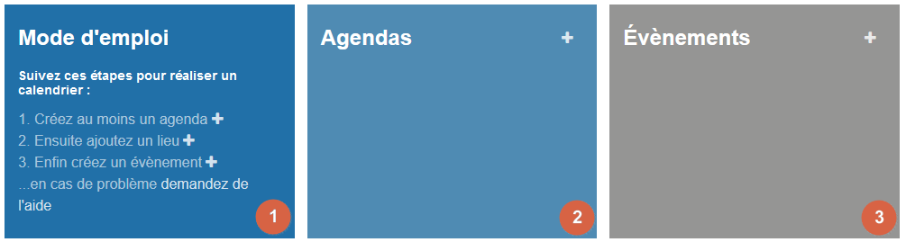
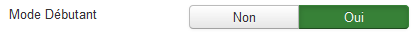
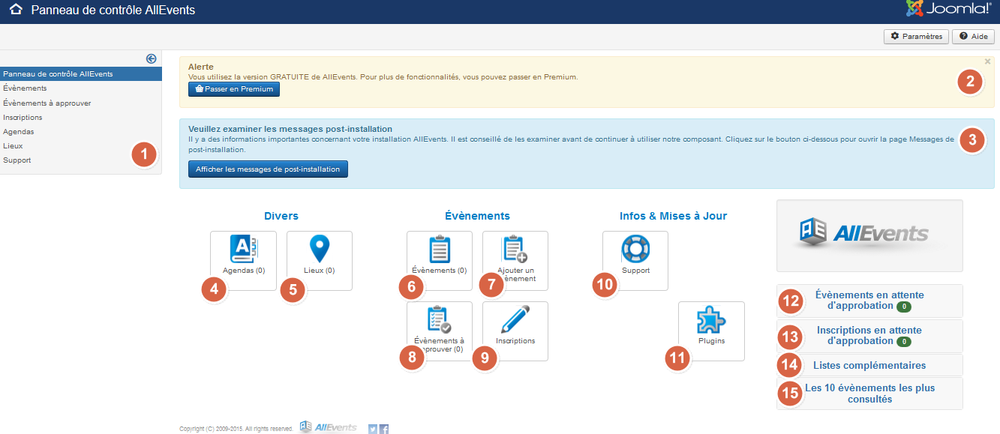

Pour accéder au panneau de contrôle de AllEvents, veuillez-vous connecter à l'administration de votre site puis naviguer jusqu'à Composants => AllEvents.
Depuis la version 3.3.1, afin de faciliter la prise en main de AllEvents, un nouveau bandeau a fait son apparition sous le message d'alerte et le message post-installation. L'objectif de ce bandeau consiste à vous aider dans le déroulé de création de vos premiers évènements.

1 - Mode d'emploi : ce cadre reprend l'enchainement de la prise en main de AllEvents. Les boutons + à droite de chaque ligne vous permettent d'arriver directement aux écrans de création agenda, lieu et évènement.
2 - Agendas : ce cadre reprend les agendas créés. Le bouton + en haut à droite vous permet d'arriver directement sur l'écran de création d'un agenda.
3 - Evènements : ce cadre reprend les évènements créés. Le bouton + en haut à droite vous permet d'arriver directement sur l'écran de création d'un évènement.
Vous pouvez désactiver l'affichage de ce bandeau en passant le paramètre général  à Non.
Voici à quoi ressemble le panneau de contrôle sans le bandeau Mode Débutant :

Regardons en détail à quoi correspondent tous ces numéros :
1 - Une ‘sidebar' qui reprend les différents liens sous forme de menu.
2 - Un bandeau vous rappelant que vous utilisez la version free.
3 - Un bandeau qui vous informe que des messages post-installation sont disponibles pour AllEvents. Dès que vous aurez pris connaissance de ces messages (en les lisant), ce bandeau n'apparaitra plus.
4 - Agendas : En cliquant sur ce bouton, vous pouvez consulter, éditer, supprimer, créer... vos Agendas.
5 - Lieux : En cliquant sur ce bouton, vous pouvez consulter, éditer, supprimer, créer... vos Lieux.
6 - Liste des évènements : Raccourci vous permettant d'éditer votre liste d'évènements
7 - Ajouter un évènement : Raccourci vous permettant de créer directement un événement sans passer par la page de gestion des évènements.
8 - Evènements à approuver : Icône raccourci vous permettant d'éditer votre liste d'évènements en attente de validation
9 - Inscriptions : Raccourci vous permettant d'éditer votre liste d'inscriptions
10 - Support : Raccourci vers les informations diverses sur AllEvents
11 - Plugins : Raccourci vers la page des plugins Joomla filtrés sur le composant AllEvents.
12 - Evènements en attente d'approbation : liste des évènements qui attendent une validation d'un administrateur
13 - Inscriptions en attente d'approbation qui attendent une validation d'un administrateur
14 - Support : Raccourci vers les informations diverses sur AllEvents
15 - Les 10 évènements les plus consultés : reprend les 10 évènements ayant été consultés le plus.